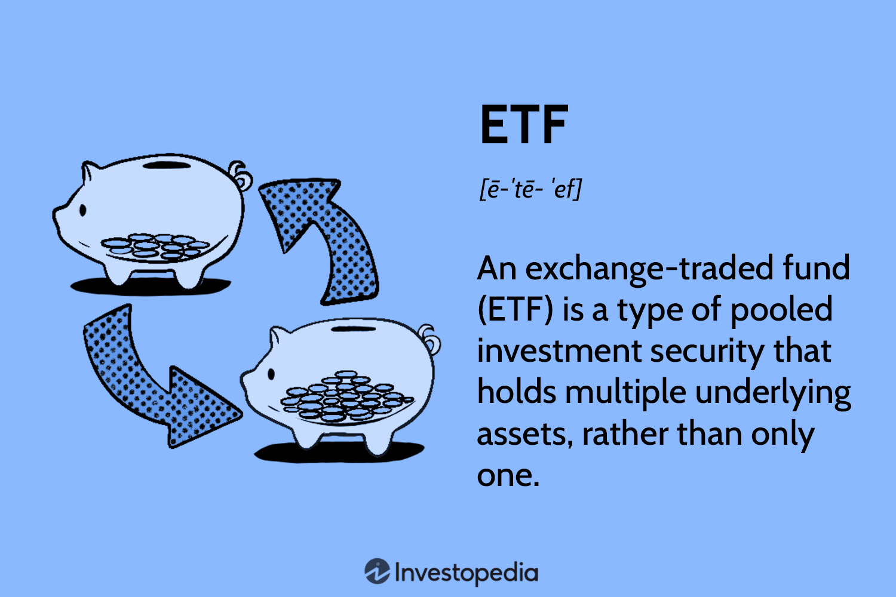

ETF는 주요 지수를 기초자산(underlying asset)으로 삼는 상품으로 발전을 해 오다가 이후 채권, 원자재, 통화, 레버리지, 인버스, 액티브 등 다양한 자산 또는 전략을 추적하는 상품들로 발전해 왔다.
액티브 ETF 보다는 지수를 추종하는 패시브 ETF가 한국 시장에서 발달했기 때문에 ETF를 한국에서는 상장지수펀드라고도 번역하여 부르지만 ETF라는 영어 이름 자체에는 '지수'라는 말은 안들어간다.
한국의 자본시장법에서 상장지수펀드라 부르기 때문에 ETF = 상장지수펀드가 되어 있지만 현재 ETF는 단순히 지수 추종만 하는 것이 아닌 사실상 액티브 펀드와 같은 성격의 ETF(=액티브 ETF)도 있기 때문에 그냥 ETF라고 부르는 것이 더 정확할 수 있다.